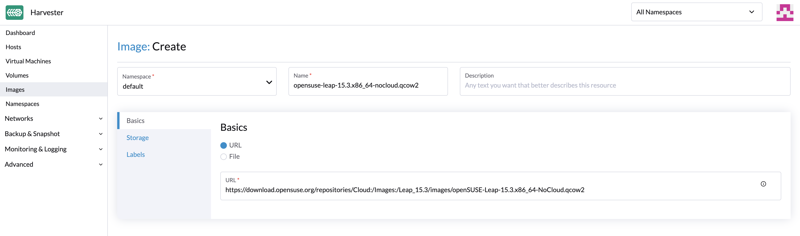
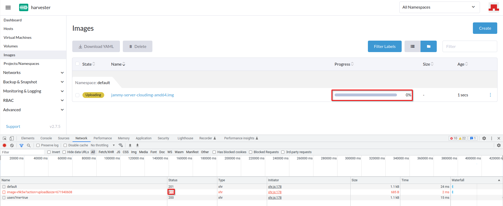
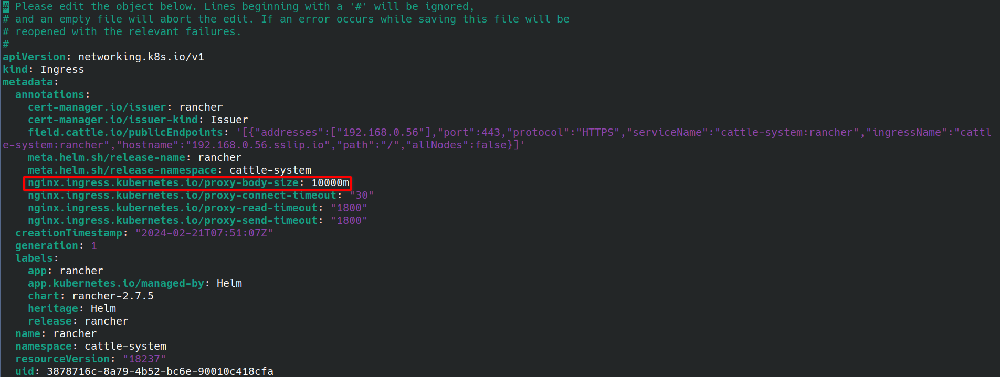
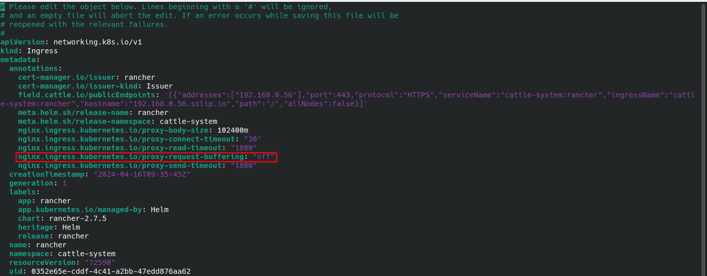

|
本文档采用自动化机器翻译技术翻译。 尽管我们力求提供准确的译文，但不对翻译内容的完整性、准确性或可靠性作出任何保证。 若出现任何内容不一致情况，请以原始 英文 版本为准，且原始英文版本为权威文本。 |
上传镜像
目前，支持三种创建镜像的方式：通过 URL 上传镜像、通过本地文件上传镜像，以及通过卷创建镜像。
通过 URL 上传镜像
-
UI
-
API
-
Terraform
要在 镜像 页面导入虚拟机镜像，请输入一个可以从集群访问的 URL。描述和标签是可选的。
|
|
大型镜像文件可能会在 SUSE Virtualization 中造成内存问题，尤其是当您使用不支持 HTTP 范围请求的第三方 StorageClasses 的下载 URL 时（例如，Python 的 |

要通过 API 从储存库导入虚拟机镜像，请创建一个 VirtualMachineImage 对象。您必须指定一个可以从集群访问的 URL。
示例：
apiVersion: harvesterhci.io/v1beta1
kind: VirtualMachineImage
metadata:
name: opensuse-leap
namespace: default
spec:
description: A human-readable description for the VM image
displayName: openSUSE-Leap
sourceType: download
url: "https://download.opensuse.org/repositories/Cloud:/Images:/Leap_15.5/images/openSUSE-Leap-15.5.x86_64-NoCloud.qcow2"
checksum: 80c27afb7cd791ac86ee1b0b0c572a242f6142579db5beac841e71151d370cd6有关更多信息，请参见 API 参考。
resource "harvester_image" "opensuse154" {
name = "opensuse154"
namespace = "harvester-public"
display_name = "openSUSE-Leap-15.4.x86_64-NoCloud.qcow2"
source_type = "download"
url = "https://downloadcontent-us1.opensuse.org/repositories/Cloud:/Images:/Leap_15.4/images/openSUSE-Leap-15.4.x86_64-NoCloud.qcow2"
}通过本地文件上传镜像
目前，支持 qcow2、raw 和 ISO 映像。
|

HTTP 413 错误在 SUSE Rancher Prime 多集群管理中
您可以在 SUSE Rancher Prime 界面 的 多集群管理 界面上传镜像。当镜像的状态为 _上传中 但进度指示器长时间显示 0% 时，请检查 HTTP 响应状态码。413 表示请求体的大小超过了限制。

最大请求体大小应特定于托管 SUSE Rancher Prime 的集群（例如，RKE2 集群的默认限制为 1 MB，但 K3s 集群没有此限制）。
当前的解决方法是从 SUSE Virtualization 界面 上传镜像。如果您选择从 SUSE Rancher Prime 界面上传镜像，您可能需要在入口服务器上配置相关设置（例如， proxy-body-size 在 NGINX 中）。
如果 SUSE Rancher Prime 部署在 RKE2 集群上，请执行以下步骤：
-
编辑 SUSE Rancher Prime 入口。
kubectl -n cattle-system edit ingress rancher -
为
nginx.ingress.kubernetes.io/proxy-body-size指定一个值。示例：

-
删除卡住的镜像，然后重新启动上传过程。
在 SUSE Rancher Prime 多集群管理中长时间上传大镜像
如果您从 多集群管理 屏幕在 SUSE Rancher Prime 界面上传大镜像（超过 10 GB），操作可能会比平常更长，镜像状态（上传中）可能不会改变。
此行为与入口配置中的 proxy-request-buffering 相关，这一配置也特定于托管 SUSE Rancher Prime 的集群。
当前的解决方法是从 *SUSE Virtualization 界面上传镜像。如果您选择从 SUSE Rancher Prime 界面上传镜像，您可能需要在入口服务器上配置相关设置（例如， proxy-request-buffering 在 NGINX 中）。
如果 SUSE Rancher Prime 部署在 RKE2 集群上，请执行以下步骤：
-
编辑 SUSE Rancher Prime 入口。
kubectl -n cattle-system edit ingress rancher -
关闭
nginx.ingress.kubernetes.io/proxy-request-buffering。示例：

-
删除卡住的镜像，然后重新启动上传过程。
上传之前从 SUSE Virtualization 下载的镜像
从 v1.5.5 开始，Longhorn 对用于下载的后备镜像进行压缩。如果您尝试上传压缩的后备镜像，SUSE Virtualization 会拒绝该尝试并显示消息 上传失败：上传的文件大小 xxxx 应为 512 字节的倍数，因为 Longhorn 默认使用 directIO，这是因为压缩数据违反了 Longhorn 的数据对齐要求。
在上传之前，使用命令 gzip -d <file name> 解压后备镜像。
镜像存储类
在创建镜像时，您可以选择一个存储类并使用其预定义参数，如副本、节点选择器和磁盘选择器。
|
镜像并不直接使用此处选择的`StorageClass`。它只是一个`StorageClass`模板。 相反，它在后台创建一个特殊的存储类，前缀名称为`longhorn-`。这由SUSE Virtualization后端自动完成，但它继承了您选择的存储类的参数。 |